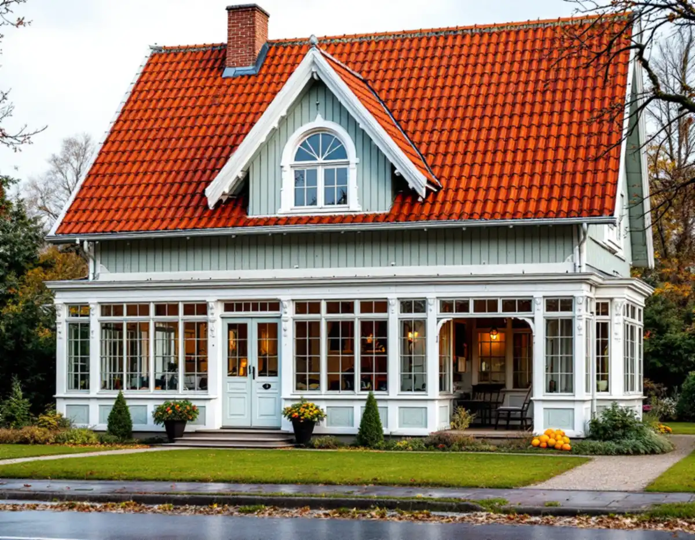
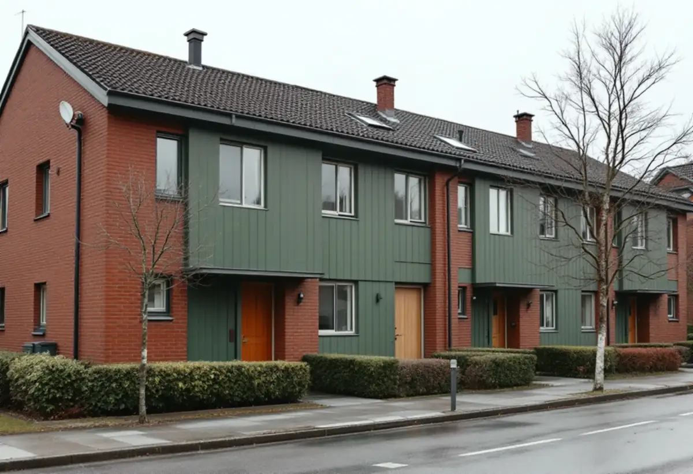

Platsbesök
Vi tittar på panel, puts, tegelhusets träpartier och fönster och gör skrapprov där det behövs.
I Hässelby kan en trävilla med glasveranda från villastadens första tid ligga granne med ett grupphusområde där alla hus har samma kulör. Det som är rätt färgsättning på det ena huset är sällan rätt på det andra. Geal Entreprenad AB målar ute och inne i Hässelby villastad, Hässelby gård och Hässelby strand, med gratis platsbesök och skriftligt kostnadsförslag.

Hässelby villastad hör enligt stadens vägledning Varsam utveckling av småhus- och villaområden till typen villastad. Villastäderna var privat organiserade, och bebyggelsen blev därför brokigare än i de egnahemsområden som staden planerade. Trä var det dominerande fasadmaterialet, även om puts förekom, och glasverandor, takkupor, snickarglädje och färgsättning gav husen en variation som fortfarande syns.
Stadsmuseet inventerade Hässelby villastad med Lambarön under sina förortsinventeringar i slutet av 1970-talet. Inventeringarna skulle bland annat fungera som underlag vid plan- och rivningsärenden och visa vad som fanns kvar av den äldsta bebyggelsen.
För en målare innebär villastaden att varje hus behöver bedömas för sig. En villa med glasveranda och profilerade foder har ofta haft en annan färgsättning än grannhuset från 1940-talet, och skrapprov på skyddade ställen visar vilka kulörer som har suttit på. Vägledningen råder att ta tillvara eller återskapa karaktärsskapande material, kulörer och detaljer så långt det går.

Under 1960- och 1970-talen ersattes många villor i Hässelby villastad av täta, sammanhållna grupper av enhetlig småhusbebyggelse, enligt vägledningen. Marken kunde utnyttjas bättre med mindre tomter och gemensamma parkeringsytor, och stadsdelen fick delvis en helt annan karaktär.
I sådana grupper är det helheten som räknas. Vägledningen nämner grupphusområdenas sammanhållna karaktär, med exempelvis enhetlig skala, färgsättning och byggnadsmaterial, som ett karaktärsdrag, och råder att förändringar i sammanhållna grupper av villor, radhus och kedjehus utformas utifrån ett helhetsperspektiv.
I praktiken betyder det att kulör, glans och kulörsättning på dörrar, vindskivor och plank bör vara densamma hus för hus. Planerar flera grannar att måla samma sommar kan ställning och förarbete samordnas, och en gemensam kulörlista gör det lättare att hålla ihop gruppen när husen målas vid olika tillfällen.
Hässelby strand och Hässelby gård hör i vägledningen till de gruppbyggda småhusområdena i tunnelbanestaden. Hässelby gård planerades samtidigt som Råcksta och ingick i Vällingby centrums omland, och i tunnelbanestäderna trappades skalan ner från högre hus vid centrum till grupper av rad- och kedjehus längst ut. Fasader i rött tegel var vanliga, men det förekom även puts och skivor i fibercement.
Vägledningen nämner just Hässelby som exempel på att nya material prövades. Ett populärt material var asbestcement, mer känt som eternit, som innehöll asbest och i många fall har bytts ut. Det finns numera fasadskivor utan asbest, vilket enligt vägledningen gör det möjligt att behålla radhusens uttryck.
På ett tegelradhus är det sällan teglet som målas, utan fönster, dörrar, plank, vindskivor och panelpartier. Sitter det kvar äldre fasadskivor behöver vi veta vad de består av innan de tvättas eller slipas, och skivor som ska bytas hör hemma under fasadrenovering snarare än målning.
Stockholms stad skriver att bygglov för fasadändringar på en- och tvåbostadshus inte längre krävs om vissa förutsättningar är uppfyllda, men att utökad lovplikt bland annat gäller i särskilt kulturhistoriskt värdefulla byggnader och områden. Stadsmuseets klassificeringskarta ger en första indikation, och lovfria fasadändringar ska ändå stämma överens med detaljplanen eller kunna ses som en liten avvikelse från den.
Riksantikvarieämbetet råder att i de flesta fall hålla sig till samma färgtyp som tidigare vid ommålning, särskilt utomhus på ytor som har målats med linoljefärg, slamfärg, trätjära eller kalkfärg. Att måla över äldre färgtyper med moderna material innebär en teknisk risk, och nästa underhåll kan bli komplicerat. Boverket påpekar på sin sida att ett byte av färgtyp kan bedömas påverka husets karaktärsdrag.
Mer om husen och taken i stadsdelen finns under takläggare i Hässelby. Inomhus målar vi väggar, tak, snickerier och dörrar och tapetserar.
Vi tittar på panel, puts, tegelhusets träpartier och fönster och gör skrapprov där det behövs.
Stadsmuseets karta och detaljplanen kontrolleras, och i grupphusområden stämmer vi av den gemensamma kulören.
Färgtyp, kulör, förarbete och antal strykningar står med, även för flera hus i samma grupp.
Tvätt, skrapning, lagning av trä och kittning av fönster.
Grundning och strykningar i lämpligt väder, med de torktider färgen kräver.
Vi går igenom resultatet tillsammans och bättrar där det behövs.
För villor och radhus med äganderätt räknar Skatteverket målning av fasader, fönster, väggar, tak och golv som rotarbete, men inte målning av staket och murar. Avdraget är 30 procent av arbetskostnaden, högst 50 000 kr per person och år och högst 75 000 kr tillsammans med rutavdrag.
I en bostadsrätt ger målning av fönster och ytterdörrar bara avdrag för insidan. Färg och material räknas inte. Geal drar avdraget direkt på fakturan.
På villastadens trähus är det snickerierna, verandorna och mängden skrapning som styr. På tegelradhusen är ytorna mindre men detaljerna många: dörrar, plank, vindskivor och fönster. Målas flera hus i en grupp samtidigt kan etableringen delas. Platsbesöket är gratis och du får ett skriftligt kostnadsförslag.
Fasad, fönster och invändig målning.
Målare i Stockholm →Takbyte, takbesiktning och plåtarbeten.
Takläggare i Hässelby →Villastaden, Hässelby strand och gård.
Takrenovering i Hässelby →Styckade tomter, gränser och kartan.
Attefallshus i Hässelby →Källarbadrum, backventil och bostadsrätt.
Badrumsrenovering i Hässelby →Riva, bygga nytt och delad tomt.
Byggföretag i Hässelby →Villastaden och radhusen.
Fasadmålning i Hässelby →Villastad, sommarstugor och grupphus.
Fasadrenovering i Hässelby →Villor, radhus och grupphus.
Fönsterbyte i Hässelby →Radhusen i Hässelby gård.
Fönsterrenovering i Hässelby →Slipa trägolvet – eller lägga nytt.
Golvläggare i Hässelby →Golvet under mattan.
Golvslipning i Hässelby →Plåttak efter eternit, rännor och beslag i Hässelby.
Plåtslagare i Hässelby →Altan, bod och plank i villastaden och radhusen.
Snickare i Hässelby →Eternit och asbest på taket.
Takbyte i Hässelby →Ny tapet i grupphus och villor.
Tapetsering i Hässelby →Hus som vuxit i omgångar.
Tillbyggnad i Hässelby →Grupphusen, eterniten och ventilationen.
Totalrenovering i Hässelby →